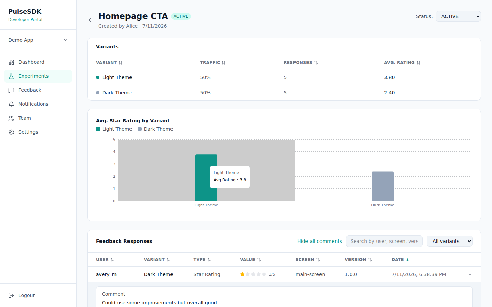

PulseSDK
In-app feedback and A/B testing for Android — one SDK, one dashboard.
PulseSDK is made of three pieces that all talk to the same server: an Android SDK your app embeds, a Developer Portal where your team creates experiments and reads results, and the server that ties them together. You define an experiment and its feedback prompt in the Portal; the SDK assigns each user a variant deterministically and collects their feedback; the Portal shows you the results live.
Where to go
Get Started →
Install the SDK, run the server and portal, create your first app.
Usage →
Assign variants, collect feedback, manage experiments from the Portal.
API Reference →
Every public SDK function and every server endpoint, with request/response shapes.
Examples →
End-to-end code samples: an A/B tested screen, a feedback form, a notification blast.
Architecture
The SDK only ever talks to the server's API-key–protected endpoints. The Portal uses a JWT for account actions (creating apps, inviting teammates) and the app's API key for anything the SDK could also read. The server is the only thing that touches the database.

Live results on an experiment's detail page — computed on request, not by a background job.
Demo Video
A ~2-minute tour of the Pulse loop, running for real: a user asks for dark mode → the team creates a Light-vs-Dark experiment → users respond to the variants → Dark Theme wins and ships as a permanent feature.
Project layout
PulseSDK/
├── Android/
│ ├── pulsesdk/ # the SDK library module
│ └── app/ # demo app that consumes it
├── Server/ # Express + Prisma REST API
├── Portal/ # React developer dashboard
└── docs/ # this site